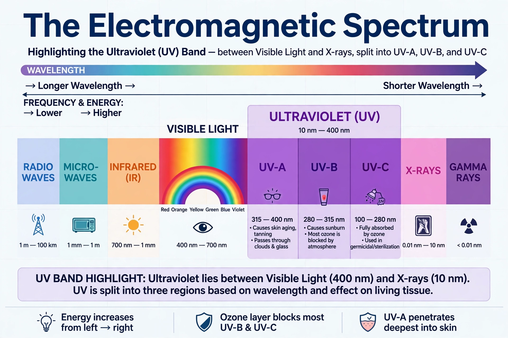

Ultraviolet

Ultraviolet (UV) radiation is electromagnetic radiation with wavelengths shorter than visible light but longer than X-rays, roughly 10 to 400 nanometres. The Sun is the main natural source; most UV reaching Earth's surface is UV-A, because the ozone layer absorbs all UV-C and most UV-B.
UV is invisible but potent: it tans and burns skin, degrades materials, sterilises water and surfaces, and drives the production of vitamin D.
Bands and the ozone shield
UV-A (315–400 nm) penetrates deeply into skin and ages it; UV-B (280–315 nm) causes sunburn, skin cancers and cataracts but also enables vitamin D synthesis; UV-C (100–280 nm) is the most energetic and is entirely absorbed by oxygen and ozone. The {L('Ozone_depletion','thinning of the ozone layer')} by CFCs therefore mattered chiefly as a threat to let more UV-B through.
The UV Index, a 0–11+ scale adopted internationally in the 1990s, translates forecast UV levels into sun-protection advice.
Uses and hazards
Applications include germicidal lamps, water and hospital disinfection, fluorescence in forensics and mineralogy, curing of inks and resins, and tanning (whose health costs are now well documented). Overexposure is a Group 1 carcinogen exposure in the case of solar radiation generally, and UV also fades pigments, cracks plastics and harms crops and aquatic life at high doses.
See also: Ozone depletion · Atmosphere of Earth · Sun · Climate · Electromagnetic spectrum